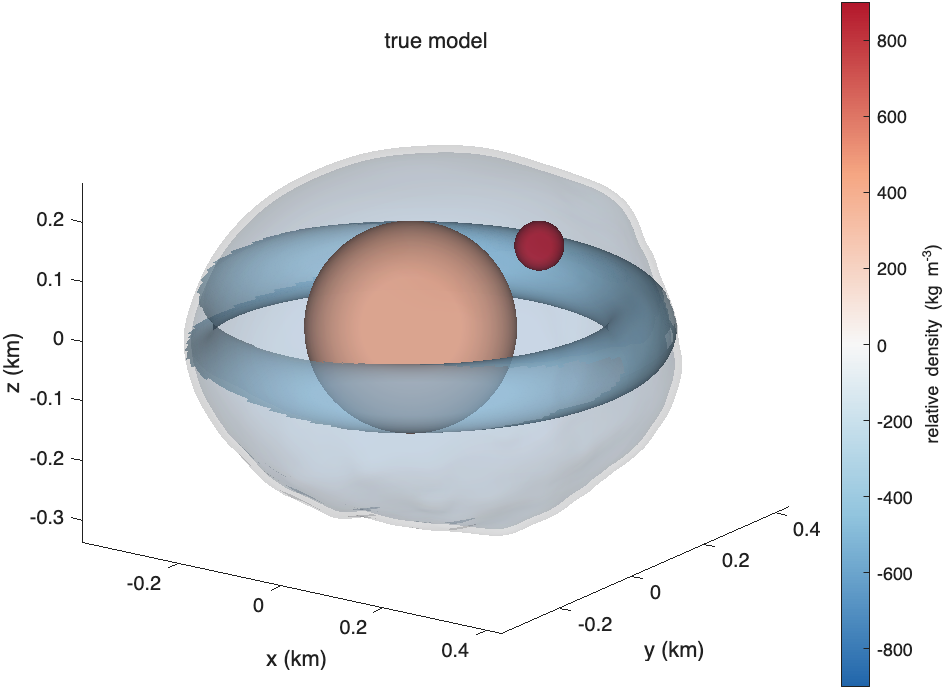
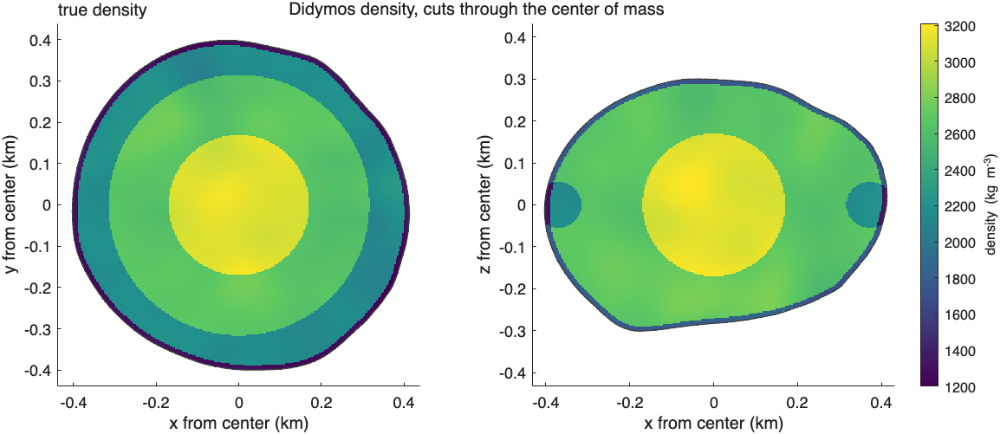
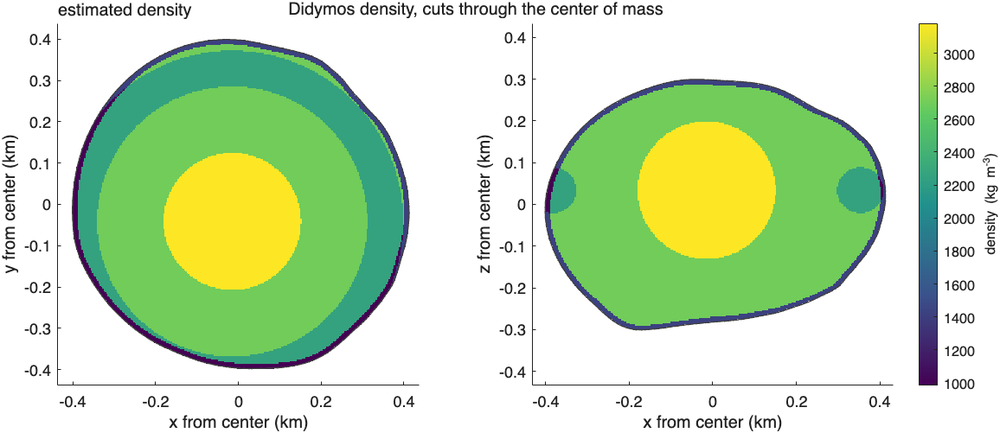
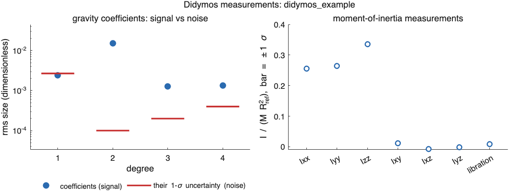
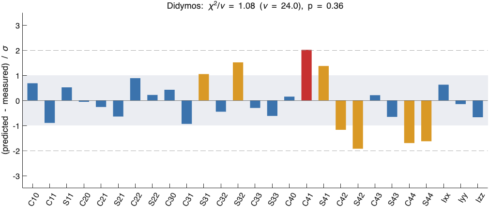
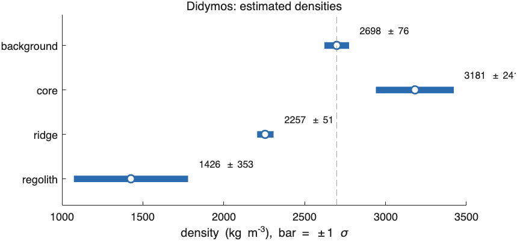
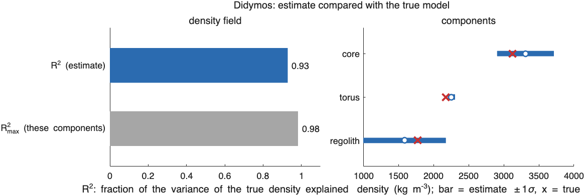
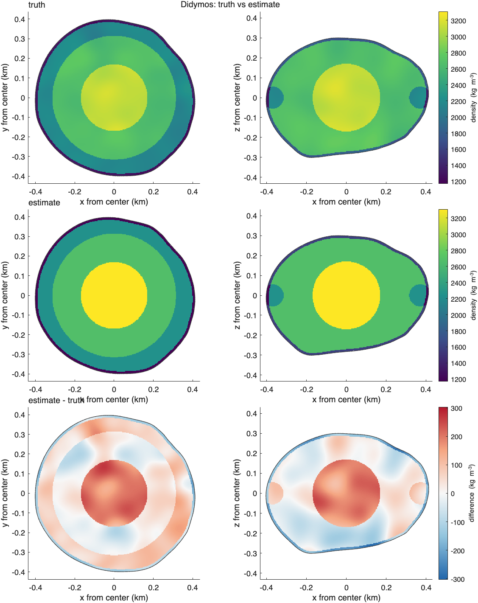
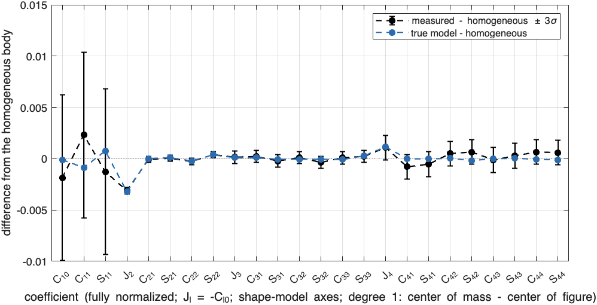
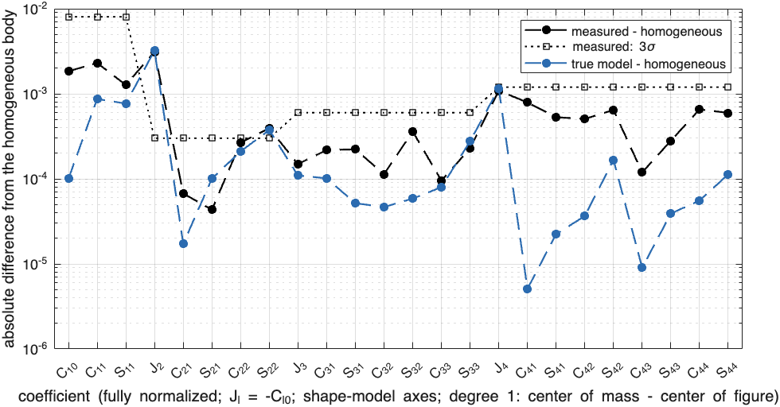

Results folders and figures#
Last edited October 20, 2026
Run folders#
sbtk.io.new_run(project, name) creates the folder results/<project>/<yyyy-mm-dd_HHMMSS>_<name>/ in the
repository and starts recording everything printed in the Command Window to log.txt in it, until
sbtk.io.finish_run closes the log. It returns an out structure, which every save and report function takes.
A new run never overwrites an earlier one.
sbtk.io.latest_run(project, name)returns the newest folder whose name after the time stamp equalsnameexactly:"didymos_T1"does not matchdidymos_T1_inversion. Inversion scripts use it to find the newest simulation.sbtk.io.subfolder(out, name)makes the save and report functions write into a subfolder while the log stays in the run folder. The Hera simulation runners use it to keep the true model apart from the data package (Hera blind test).
out = sbtk.io.new_run("my_project", "T1_inversion"); % results/my_project/<date_time>_T1_inversion/
prob = sbtk.invert.setup(body, components, obs, sbtk.invert.options());
sbtk.io.report_inversion(out, body, sbtk.invert.run(prob), sbtk.invert.homogeneous(prob));
sbtk.io.finish_run(out);This fragment requires body, components and obs as defined in the first script.
Files#
| File | Written by | Contents | Read with |
|---|---|---|---|
log.txt |
sbtk.io.new_run |
Everything printed during the run. | a text editor |
settings.json |
sbtk.io.save_settings, called by the report functions |
Body, degree, uncertainties, components, random field, noise seed and inversion settings of the run. | jsondecode(fileread(file)) |
measurements.txt, .mat |
sbtk.io.save_measurements |
The measurement set (obs); the text has only the diagonal of the coefficient covariance. |
sbtk.io.load_measurements |
truth.txt, .mat |
sbtk.io.save_truth |
The true model of a simulation (truth). |
sbtk.io.load_truth |
fit.txt, .mat |
sbtk.io.save_fit |
Densities with 1σ, test, every residual (fit). |
sbtk.io.load_fit |
homogeneous.txt |
sbtk.io.report_inversion |
The same data fitted by a homogeneous body. | |
comparison.txt, .mat |
sbtk.io.save_comparison |
, , RMS error, per-component comparison (cmp). |
load |
figures/*.png |
sbtk.io.save_figure (200 dpi) |
The figures below. |
The report functions write a standard set in one call:
| Function | Writes |
|---|---|
sbtk.io.report_simulation(out, body, obs, truth) |
measurements.*, truth.*, settings.json, figures/truth_3d.png, truth_slices.png, measurements.png |
sbtk.io.report_inversion(out, body, fit, homogeneous) |
fit.*, homogeneous.txt, settings.json, figures/residuals.png, densities.png, estimate_3d.png, estimate_slices.png |
sbtk.io.report_comparison(out, body, truth, fit, cmp) |
comparison.*, settings.json, figures/comparison.png, truth_vs_estimate.png |
Text formats#
Measurements (sbtk.io.write_measurements, sbtk.io.read_measurements): one keyword per line, values separated
by spaces, # lines are comments. coef lines hold , , , and their 1σ; inertia lines
hold the label, value, 1σ and the six weights. The first lines of a file:
# Didymos measurements: didymos_example (SBTK 1.0.0)
# Simulated by SBTK from interior didymos_example. Values include simulated measurement noise (seed 1).
# Lines: keyword then values. coef = gravity coefficient: degree l, order m, C, S and their
# 1-sigma uncertainties (fully normalized, Kaula, no Condon-Shortley phase; dimensionless).
# inertia = one moment-of-inertia measurement on I/(M R_ref^2): label, value, 1-sigma, then
# its weights on Ixx Iyy Izz Ixy Ixz Iyz. Lengths in km, mass in kg.
body Didymos
name didymos_example
mass_kg 5.272999999999999e+11
GM_km3_s2 3.519358390000000e-08
R_ref_km 4.300000000000000e-01
degree 4
origin_km 1.528148834993066e-02 4.288469572137803e-02 -3.405288560049095e-02
coef_about origin (origin: coefficients about origin_km; center_of_mass: degree >= 2 about the center of mass)
com_minus_cof_km -6.480457727157593e-04 5.708425733001801e-04 -7.435287904191540e-05
noise_seed 1 (NaN = exact values or real data)
libration_sigma 2.000000000000000e-02 (1-sigma of the libration ratio; NaN = none)
# gravity field about origin_km: l m C S sigma_C sigma_S
coef 1 0 -1.743147996446580e-03 0.000000000000000e+00 2.685350089254074e-03 0.000000000000000e+00
coef 1 1 3.171855274043025e-03 -2.036642465133304e-03 2.685350089254074e-03 2.685350089254074e-03
coef 2 0 -3.267843300100998e-02 0.000000000000000e+00 1.000000000000000e-04 0.000000000000000e+00
coef 2 1 3.580678708085953e-03 9.264930696445466e-04 1.000000000000000e-04 1.000000000000000e-04
coef 2 2 2.690908094312223e-03 -6.620608536237520e-03 1.000000000000000e-04 1.000000000000000e-04
coef 3 0 8.207508643558385e-04 0.000000000000000e+00 2.000000000000000e-04 0.000000000000000e+00
coef 3 1 -2.161190799036665e-03 1.345792464405454e-03 2.000000000000000e-04 2.000000000000000e-04
coef 3 2 -1.185030577784691e-04 1.023223669886617e-03 2.000000000000000e-04 2.000000000000000e-04
coef 3 3 -7.109585763745573e-04 -1.687530510730563e-03 2.000000000000000e-04 2.000000000000000e-04
coef 4 0 3.025957726300028e-03 0.000000000000000e+00 4.000000000000000e-04 0.000000000000000e+00
coef 4 1 -1.108795363729265e-03 -9.890871671108035e-04 4.000000000000000e-04 4.000000000000000e-04
coef 4 2 5.087506921525737e-04 1.560247138787098e-03 4.000000000000000e-04 4.000000000000000e-04Inversion results (sbtk.io.write_fit): lines beginning with # describe the lines below them.
# Didymos inversion of didymos_example (SBTK 1.0.0)
# chi-square, degrees of freedom, reduced chi-square, p-value (consistent at 5%: true)
chi2 25.9429 dof 24.000 chi2_reduced 1.0810 p_value 0.3561
n_measurements 27
regularization 0
moi_used Ixx Iyy Izz
origin_km 1.528148834993066e-02 4.288469572137803e-02 -3.405288560049095e-02
coef_about origin com_shift_km 0.000000000 0.000000000 0.000000000 (degree >= 2 and inertia predicted about origin_km + com_shift_km)
# density <component> <relative density> <its 1-sigma> <density> <its 1-sigma> [kg/m^3]
# (+ center x y z and their 1-sigma in km, if the center was estimated; + axis x y z and the
# 1-sigma of the rotations about the first, second and third axes in deg, if estimated)
density background 0 0 2666.936 129.322
density core 642.329 533.014 3309.265 405.126
density torus -414.298 108.921 2252.638 52.039
density regolith -1082.035 716.363 1584.901 588.859
# component <name> <type> <geometry>
component core sphere center [15.9 42.3 -34.0] m, radius 170.0 m
component torus torus ring 370.0 m, tube 55.0 m, ring center [15.9 42.3 -34.0] m, axis [0.0000 0.0000 1.0000]
component regolith layer 0.0 to 12.0 m below the surface
# residual <label> <measured> <predicted> <sigma> <(predicted - measured)/sigma>
residual C10 -1.743147996447e-03 8.859490892471e-05 2.685350e-03 0.682
residual C11 3.171855274043e-03 7.515844247841e-04 2.685350e-03 -0.901True models (sbtk.io.write_truth) and comparisons (sbtk.io.write_comparison) use the same layout.
Figures#
Every plot function returns a figure handle. sbtk.io.save_figure(out, fig, name) saves it as
figures/<name>.png at 200 dpi in a run folder; exportgraphics saves it anywhere. Densities are drawn with a
sequential color map (dark blue to yellow); signed differences with blue for lower and red for higher density.
The figures below come from one synthetic Didymos run, made by documentation/tools/make_samples.m: a core
(+450 kg/m³) at the center of figure, an equatorial torus (−500) about the -axis through it, a 12 m regolith layer
(−900), a boulder of radius 40 m (+900) and a random
field of 40 kg/m³ with a 60 m correlation length; measurements to degree 4 with the uncertainties of the
first script; an inversion for core, torus and regolith (the boulder and the field
are not in the inversion model). The fit has (), the homogeneous body ;
with .
Shape model#
sbtk.plot.shape(body): the mesh with its center of figure and axes.

Interior in three dimensions#
sbtk.plot.interior3d(body, model, title): the surface drawn translucent; spheres, ellipsoids and tori drawn where
they lie inside the body, layers by their lower boundary; color is the relative density. Sectors are not drawn (use
slices). Saved as truth_3d.png and estimate_3d.png by the report functions.

Density slices#
sbtk.plot.slices(body, {models}, {titles}): the density on the plane (left) and the plane (right), both
through the first model's origin, one row per model with a common color scale. Saved as truth_slices.png and
estimate_slices.png.


Measurements#
sbtk.plot.measurements(obs): left, the root-mean-square size of the coefficients of each degree (points) and of their
1σ uncertainties (line); degrees where the points lie well above the line carry information about the interior. Degree 1
is close to zero about the center of mass. Right, each inertia measurement with its 1σ. Saved as measurements.png.

Normalized residuals#
sbtk.plot.residuals(fit): (predicted − measured)/σ for every measurement; gray band ±1σ, dashed lines ±2σ. Saved as
residuals.png.

Estimated densities#
sbtk.plot.densities(fit): the density of the background and each component with its ±1σ interval; the dashed line is
the background. Components whose relative density is smaller than its 1σ are drawn in gray. Saved as densities.png.

Comparison with the true model#
sbtk.plot.comparison(cmp): left, of the estimate and ; right, each component's estimate with ±1σ
and its true density (cross). Saved as comparison.png.

sbtk.plot.truth_vs_estimate(body, truth, fit): rows for the true density, the estimate (same color scale) and their
difference, on the two planes through the true center of mass. Saved as truth_vs_estimate.png.

Difference from the homogeneous body#
sbtk.plot.difference_from_homogeneous(body, sets, names, scale, frame): for each set of gravity coefficients (a
measurement set, a true model or an inversion result), the coefficients minus those of the homogeneous body (density
), both about their own center of mass, as radio-science fields are. Degree 1 shows the set's center of mass minus
the center of figure. A measurement set about another point (for example a field about the shape-model origin) is first
moved to its center of mass by the exact translation of solid harmonics. Zonal coefficients are shown as
. With scale = "linear" the signed difference has ±3σ bars for sets with uncertainties; with
"log" the absolute difference is drawn with 3σ as a separate line, which shows which departures from a uniform
density the measurements resolve. With frame = "shape" both fields are in the shape-model axes; with "spin" in the
spin axes of the set ( along its axis of the largest moment), where the set's , vanish;
with "principal" in its principal axes, where also vanishes. The differences in the vanishing terms are
the homogeneous body's own terms in those axes: they measure how far the principal axes of the interior are tilted and
turned from those of the homogeneous body (Frames of a gravity field).
Not saved by the report functions; save it with sbtk.io.save_figure.

